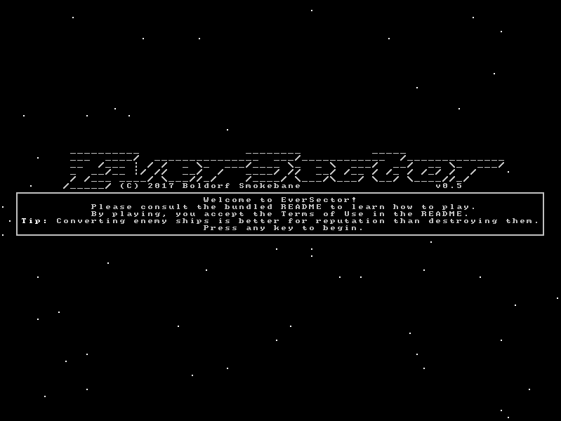
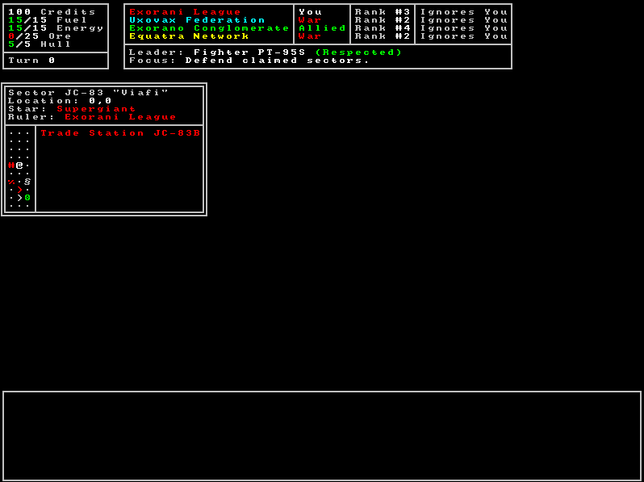
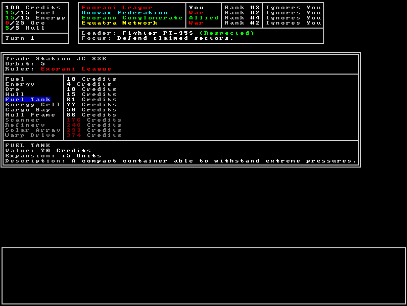
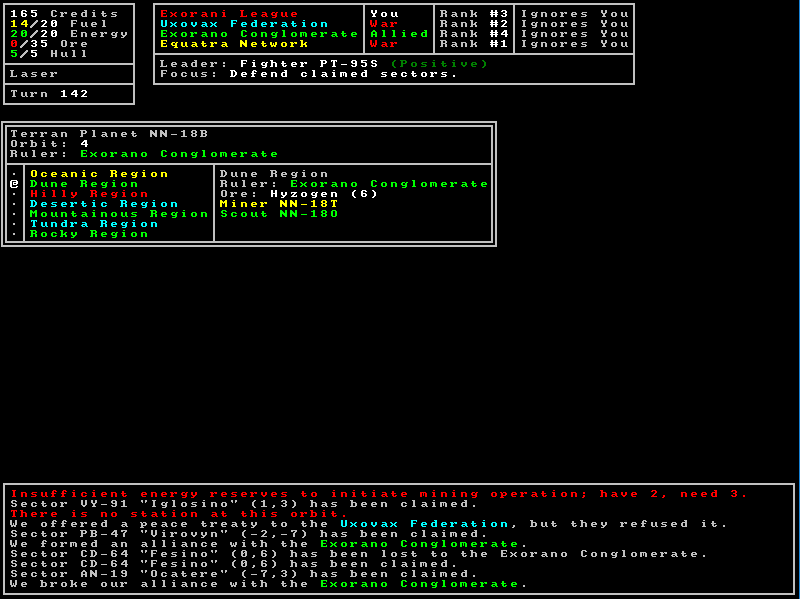
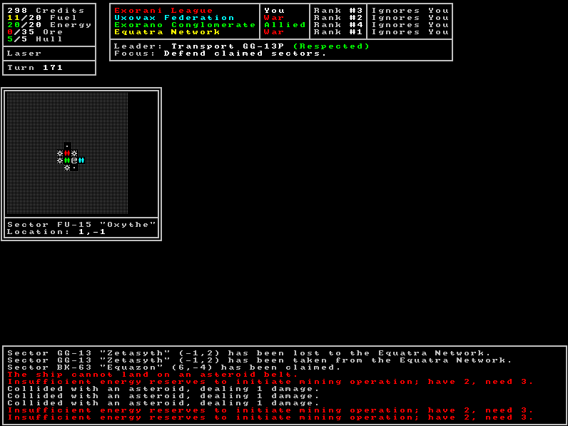
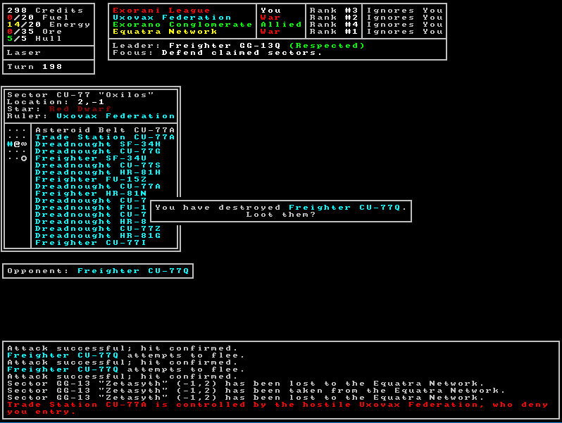

EverSector
README
© 2016-2017 Boldorf Smokebane
Terms of Use
Definitions
- "the game" refers to EverSector
- "game files" refers
to all files included in the official binary downloads of EverSector
- "the
creator" and "the developer" refer to Boldorf Smokebane
General Terms
EverSector and its logos are the intellectual property of Boldorf
Smokebane (pseud.) and are protected by copyright law. Some rights
reserved. EverSector is
provided
with no warranty. The developer may not be held liable for any issues
the game may cause.
Your rights over EverSector are limited only by
the following conditions. If you are found to be in violation
of these conditions, you may be persecuted without warning. If
you are found to be infringing in a way not listed below, you will be
notified by the developer prior to any legal action. The terms may be
amended based on the issue.
- You may not, in any circumstance, claim ownership of the
game.
- Private sharing and copying of game files is permitted. The
game may not be reuploaded to any public sites without the express
permission of the developer.
- Screenshots, videos, and other inspired content, monetized
or not, are permitted if they are clearly labeled as such. A link to
the game's official
page is required, if feasible, though the word "EverSector"
in
the title should suffice otherwise. These restrictions do not apply to
content shared solely through official sites, such as the forums.
Source Code Terms
Usage of the
game's source code is governed by a separate license. See LICENSE.txt in
the source code download for this license.
Changes to the Terms
Updates to the terms are applied retroactively to previous versions,
rendering the terms of older versions void. Updates are published
on the game's official
page, and the latest terms can be
found on this Google Doc. By using an older
version of EverSector in the ways described above, you agree to be
bound by the latest terms of use.
Guide
How to Play
EverSector is played entirely with the keyboard. Every action
you can
take is triggered by a keypress or combination of them. At almost any
time, you may press ?
to see all
actions currently available to you. This list may change based on your
situation and items you may have. In popup windows
and
confirmation dialogs, y
or enter
is equivalent to "yes," n
means "no," and q
or escape
means "cancel." Sometimes "cancel" performs the same function as "no,"
though generally it can be used to leave the dialog without performing
an action. To navigate menus, use the arrow keys. In some cases, wasd, the VI
keys, and the number pad may also be used to navigate. The current
selection is often denoted by a blue highlight.
Getting Started
You begin in the central sector of the galaxy, a place free of pirates
and hostilities. To start earning credits, find a planet or asteroid
belt to mine, and sell the ore at a station. The number next to the ore
indicates its density, or how many units you will get from mining it.
You can use the r
key to automatically restock all of your resources at a station, as
well as selling ore. If you find yourself in a sector with no planets,
you will have to escape the sector by flying down past the outermost
orbit. From there, search for another station system (#). If you
happen to run out of fuel, you can try broadcasting a distress signal.
Once you have secured a source of income, you can choose to spend your
credits on various items. Soon your power will grow and you can embark
on your own path through the depths of space.
Goal
EverSector is, in some sense, a sandbox. There are no goals imposed
upon you, and you are given the freedom to play as you wish. The most
straightforward way to judge progress is by the credits you possess.
However, it can be much more fun to impose challenges upon yourself.
Become the leader of your faction, assassinate an enemy leader, claim
the entire galaxy for your faction, or upgrade your ship to its limits
and crush your foes. Now go forth, and shape the future of your galaxy!
Links
Credits
Changelog
Version History
v0.6 (2017-08-07):
- Battles can now occur between several ships
- Attacking a ship may cause other ships at the same orbit
to join on either side
- Any enemy ship may be fired upon, and all ships can be
scanned
- Winning a battle will distribute the loot among
particpants, though not always evenly
- All ships can flee the battle or pursue those escaping
- Ships will self-destruct when they can no longer flee
- Surrendering will be added in a later update
- Two-dimensional region maps on planets
- Regions are now laid out on a grid
- Traveling east or west long enough will take you back to
where you began
- Traveling over a pole will take you to the opposite side
of the world
- Regions are no longer generated with a ruling faction
- Split station screen into two panels
- Left panel is used to buy items from stations
- Right panel is used to sell items
- Each list is color-coded to show why you can't buy or
sell an item
- Lists change size dynamically based on items you have
- Overhaul AI
- The AI is actually slightly worse, but the new framework
will allow for significant improvements
- AI ships can now buy and use more modules
- AI personalities are planned for an update soon
- Faction focuses were removed
- Message improvements
- Message history is now scrollable
- Repeated messages are now shown with counters to avoid
message spam
- Other features
- Destroyed ships now recorded on the leaderboard
- Reimplemented crash landings
- Display dimensions and audio volume can now be controlled
through the options menu
- You start in a random station system, rather than the
center
- Removed attack restrictions in the central sector
- Reputation levels are now relative to other ships in the
faction
- Add a window title and icon to the Java version of the
game
- Quality-of-life improvements
- Shift+Q now required to trigger the quit prompt
- The game can now be replayed without relaunching it
- Bug fixes
- Earn credits for resources over capacity when selling
expanders
- Windows version now works without Java installed
- Fixed README images not displaying
v0.5 (2017-06-28):
- Complete UI overhaul!
- The game is now displayed through AsciiPanel and APWT
- Buffered display allows for complex windows
- Input is now entered through single keypresses
- CP437 characters give better representations of the
universe
- Colors are used to differentiate between factions
- The game no longer needs launchers
- Background music and sound effects
- Minor gameplay changes and balancing
- Orbiting is now done one orbit at a time
- Flying around planets can now be done only between
neighboring regions
- Orbit costs lowered
- Sector entry cost added
- Seed-based saving and loading now works!
- Removed some features
- Debug commands
- Region exploration
- Anomalies
- Faction news (now directly added to the message log)
- Scanning objects in sectors
- Automining and max buying/selling (now unnecessary)
- Most game data stored in files
v0.4.3 (2017-01-19):
- Massive faction updates
- New leader election system with voting, campaigning, and
more opportunities to be elected
- The faction menu is now a full menu with options for
every ship, not just leaders
- Reputation is different for each faction rather than
being global
- Faction-wide news can be viewed in the faction menu
- More demographics are now shown as a leader
- Factions can no longer respond to distress signals or
build new ships without enough funds in their economy
- Changes to landing and mining
- Instead of just landing on a planet, you choose a region
to land on
- There are also a few different varieties of ore with
different densities
- Different types of ore can be found in each region
- New ore menu to view different ore types
- Mining from asteroid belts can now potentially damage
your ship
- Updates to exploration
- Strange anomalies can be detected from afar with a scanner
- These can be traced to a planet and explored for great
rewards
- Undiscovered flora and fauna can be found and uploaded
for rewards too
- Balancing and fixes
- Capped the number of expanders that can be purchased
- Looting only gives half of the possible rewards
- Solar arrays no longer work from planets due to
inconsistent light exposure
- Fixed inverted y-axis!
- Fixed incorrect prices for resources and expanders
- Miscellaneous improvements
- New options menu and options to change
- New leaderboard system with more statistics
- Remapped lots of keys to make more sense
- Launchers now work in any folder
- Crashes now print a stack trace before closing
v0.4.2 (2016-12-24):
- New command system with files
- All commands are now stored in files and thus
customizeable
- There are multiple ways to trigger a single command
- Most submenus now have hotkeys as well
- A master manifest is now used, allowing every
other file to be stored in any location
- New commands
- "h" or "here" looks at the current location
- "z" or "automine" mines as long as possible
- "max" can be entered when claiming to claim as many
regions as possible
- Major AI improvements
- Powerful ships now seek out other sectors to explore
- Factions each have a focus, such as expanding or defending
- Leaders can change the focus, which influences what the
faction's ships will do
- Balancing
- Scores are no longer logged for games that are too short
- Only leaders can see the number of controlled sectors and
the status of the economy
- Distress responses also supply credits
- Decreased cost of warp drive
- Reputation barriers are higher so ships can be better
distinguished
- The Windows Launcher can now launch the game from any folder
- Added faction economies
- Duplicate modules are now stored as cargo
- Lots of fixing and polishing
v0.4.1 (2016-10-16):
- Revamped region explorations and sites
- There are a finite amount of "sites" in each region
- Sites cannot be looted more than once, and can be
returned to if not looted
- Disasters and the regions causing them are now stored in
files
- Changes to escaping
- Escaping now costs fuel
- Pursuits will always succeed, but they also cost fuel
- You can choose to flee or pursue as long as possible, or
spend fuel one at a time
- New and updated commands
- New "surrender" command in battle
- "look" command lets you look at any discovered sector
- Many new debug commands
- Removed the outdated "hint" command
- The universe is now simulated for a little while before
playing
- You can now become a faction leader by eliminating the
previous one
- You can now choose to be elected and if you wish to hold
elections for new leaders
v0.4 (2016-09-04):
- Planetary regions and changes to claiming
- Planets now consist of various regions which are claimed
separately
- The cost for claiming a region is lower, but rewards less
reputation
- When exploring, you can now choose which region to explore
- Regions have their own benefits and dangers, so choose
wisely
- Massive changes to faction leaders and relationships
- Faction relations now change over time
- Leaders have the final say on negotiable relationship
changes
- As a leader, you also have the option to enact these
changes yourself
- When only two factions exist, prepare for a perpetual war
- Local leaderboard and names
- At the end of every game, the worth of your ship and your
reputation are saved
- You can later compare your scores and try to beat them
- You can also have a name for yourself across multiple
games
- You can optionally name your ship in each game, which
will be saved to the leaderboard
- Station restrictions
- Battle stations will no longer sell weapons to pirates
- Stations of a faction at war with you will not allow you
to dock
- You can, however, attempt to claim a station from your
enemies
- Several quality-of-life improvements
- Firing weapons in battle no longer prompts you to press
enter
- You can now see your relationship with ruling factions at
a glance
- Added random tips that appear whenever you start a new
game
- Remapped status and define shortcuts to
easier-to-remember
keys
- Polished the orbit UI so that it takes up less space
- Miscellaneous features and tweaks
- Added solar arrays that regenerate energy over time
- Added crash landings if your ship is low on fuel
- Factions are now categorized into different types, such
as federations and networks
- Reputation now slowly "fades" towards zero
- Other factions may now help you when in distress if your
own does not
- Claiming an ally's territory is worth less than claiming
an enemy's
- It is now possible to mod new items into the game with the
use of manifest files
v0.3.3 (2016-07-28):
- Improved several aspects of the game's flow
- Actions can now be read on a single line!
- Removed several unnecessary enter prompts
- New commands
- "toggle" command to activate modules
- "control" debug command to take control of another ship
- Bug fixes
- Fixed abnormally large amounts of ships in the central
sector
- Nebulae now generate correct correctly
- Removed the (unlikely) possibility of multiple sectors
with the same name
- Added cloaking devices
- Shields and cloaking devices must be activated with the
"toggle" command
- Stations can now be aligned to factions like planets
- Improved and balanced exploration
- Attacking is now possible in the central sector, but at a
cost
- All module/resource data is stored in files now, which may
allow for mods later
v0.3.2 (2016-07-20):
- Overhauled file systems and added a rudimentary "save"
functionality
- Save data is stored in save.properties
- Options are kept between games with options.properties
- Seed is now stored along with options
- Properties file extensions are now used instead of .txt
- The "game" command can now display much more information
- New planetary exploration system
- Planets can now be explored with the "explore" command
- Random events can occur depending on the type of planet
you're on
- The "look" command now accepts the target "here"
- Claimed planets will not generate in station systems
- Fixed improper fractions when selling expanders
- Fixed a missing farewell message for negatively-aligned
wanderers
v0.3.1 (2016-07-07):
- Added nebulae that generate around neutron stars and
supergiants
- Further improved farewell messages
- Renamed "hull plate" to "hull frame" to avoid confusion
- Major bug fixes
- Fixed faction leaders being selected immediately
- Fixed prompts appearing before checking if action is
possible
- Fixed max purchases and sales for expanders
- Fixed item spacing on trade stations
v0.3 (2016-07-03):
- New commands to improve playability and informativeness
- New "restock" command to sell all ore and max out other
resources
- New "game" command to print information about the game
(including seed!)
- Upgraded "relations" menu to "faction" menu and added
information
- "Claim" command for claiming planets
- Updates to faction control, which now extends to sectors
and planets
- You will now start as part of your sector's dominant
faction
- Planets can be claimed for reputation
- Faction view will now show the faction that controls each
sector
- Ships with high enough reputation may become faction
leaders
- Major changes to sectors and their contents
- Asteroid belts give an interesting tradeoff to
mining-oriented players
- The number of orbits varies based on the size of the star
- The cost of orbiting now varies based on distance
- New seed file
- Fixed AI docking loops
- Rebalanced cross-sector movement, godmode, and pulse beam
damage
v0.2.4 (2016-06-30):
- Project's official name has been decided: EverSector!
- Added randomly-generated names for each sector and
faction
- Improved grammar in the farewell message
- Fixed a crash when docking at a station with foreign modules
v0.2.3 (2016-06-22):
- Ships can now convert other ships and the player
- Longwait has been changed to hibernate and is now debug-only
- Rebalanced reputation earned by mining
- Fixed lack of price variance in stations
- Fixed error messages giving a negative number when selling
v0.2.2 (2016-06-09):
- Completely overhauled distress signals (now functional!)
- Hint command now gives much more contextual information
- New option to mine as long as possible
- Fixed bug that allowed you to dock while landed
- New HTML README file
v0.2.1 (2016-06-08):
- Massive improvement in JavaDoc documentation
- Status bar now shows your faction and reputation
- Help menu now hides commands that you don't have modules for
- Fixed some bugs with transactions and scans
v0.2 (2016-06-03):
- New status bar that acts as a quick reference to your
resources
- New "hint" command that gives you tips about your situation
- Random seed displayed and changeable through the debug menu
- Contextual command list that hides unavailable options
- Fixed a crash with unaligned players
- Various optimizations with reading input
Screenshots






Back to Top